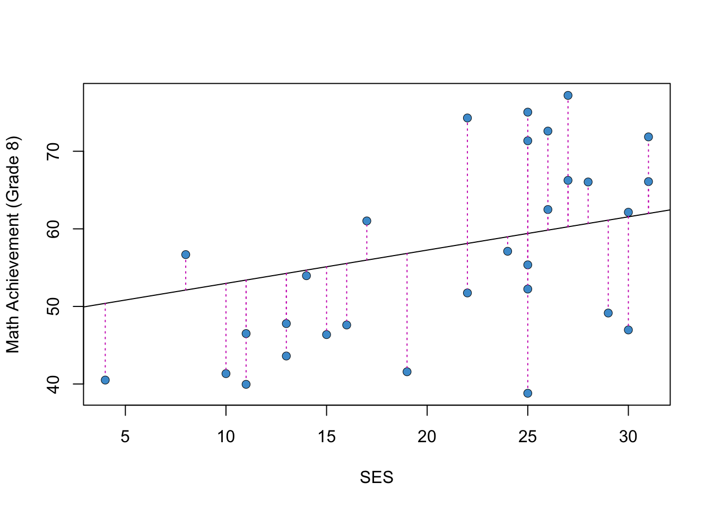
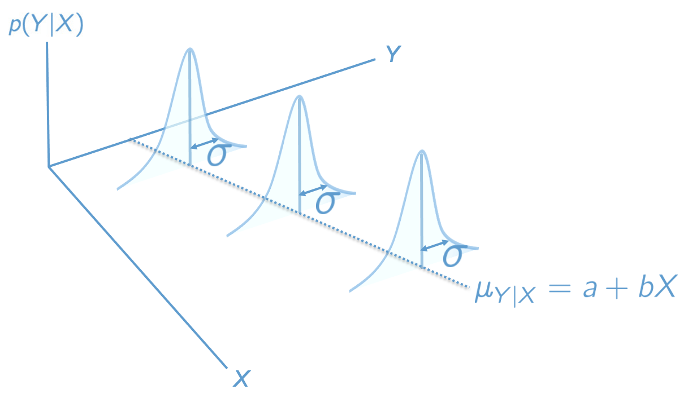
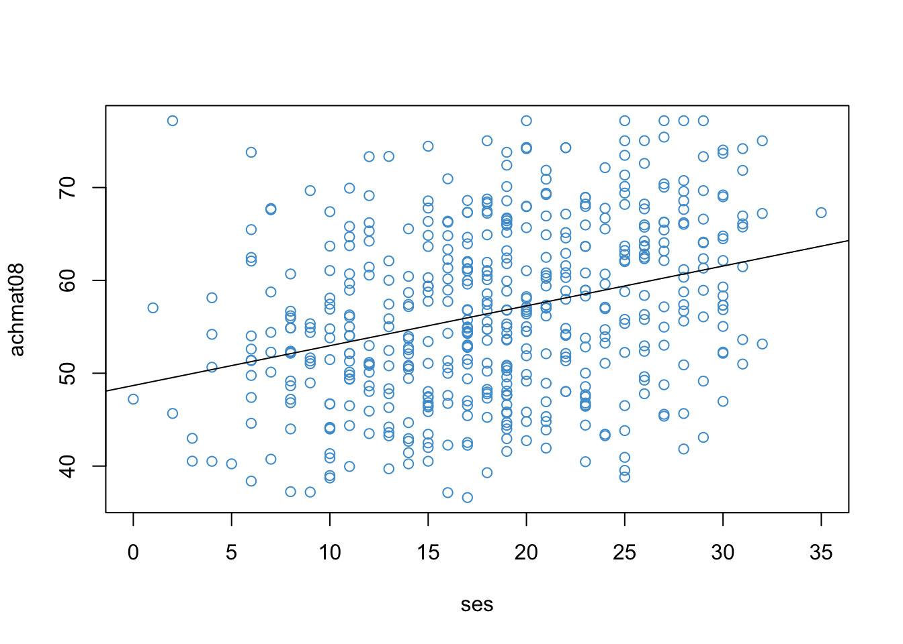
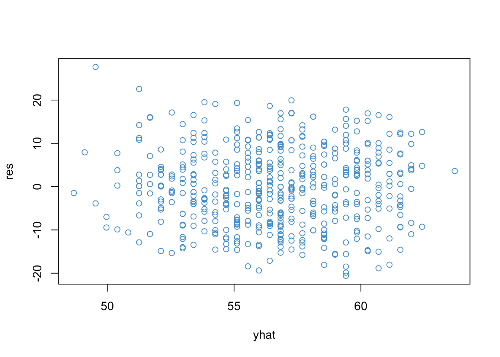

The focus of this course is linear regression with multiple predictors (AKA multiple regression), but we start by reviewing regression with one predictor (AKA simple regression). Most of this material should be familiar from EDUC 710.
2.1 An example from NELS
Let’s begin by considering an example. Figure 2.1 shows the relationship between Grade 8 Math Achievement (percent correct on a math test) and Socioeconomic Status (SES; a composite measure on a scale from 0-35). The data are a subsample of the 1988 National Educational Longitudinal Survey (NELS; see https://nces.ed.gov/surveys/nels88/).
Code
# Load and attach the NELS88 dataload("NELS.RData")attach(NELS)# Scatter plotplot(x = ses, y = achmat08, col ="#4B9CD3", ylab ="Math Achievement (Grade 8)", xlab ="SES")# Run the regression modelmod <-lm(achmat08 ~ ses)# Add the regression line to the plotabline(mod)
Figure 2.1: Math Achievement and SES (NELS88).
The strength and direction of the linear relationship between the two variables is summarized by their correlation. In this sample, the value of the correlation is:
Code
cor(achmat08, ses)
[1] 0.3182484
This is a moderate, positive correlation between Math Achievement and SES. This correlation means that eighth graders from more well-off families (higher SES) also tended to do better in math (higher Math Achievement).
The relationship between SES and academic achievement has been widely documented and discussed in education research (e.g., https://www.apa.org/pi/ses/resources/publications/education). Please look over this web page and be prepared to share your thoughts/questions about the relationship between SES and academic achievement and its relevance for education research.
2.2 The regression line
The section presents three interchangeable ways of writing the regression line in Figure 2.1. You should be familiar with all three ways of presenting regression equations and you are welcome to use whichever approach you like best in your writing for this class.
The regression line in Figure 2.1 can be represented mathematically as
\[
\widehat Y = a + b X
\tag{2.1}\]
where
\(Y\) denotes Math Achievement
\(X\) denotes SES
\(a\) represents the regression intercept (the value of \(\widehat Y\) when \(X = 0\))
\(b\) represents the regression slope (how much \(\widehat Y\) changes for each unit of increase in \(X\))
In this equation, the symbol \(\widehat Y\) represents the predicted value of Math Achievement for a given value of SES. In Figure 2.1, the predicted values are represented by the regression line. The observed values of Math Achievement are denoted as \(Y\). In Figure 2.1, these values are represented by the points in the scatter plot.
Some more terminology: the \(Y\) variable is often referred to as the outcome or the dependent variable. The \(X\) variable is often referred to as the predictor, independent variable, explanatory variable, or covariate. Different areas of research have different conventions about terminology for regression. We talk more about “big picture” interpretations of regression in Chapter 3.
The difference between an observed value \(Y\) and its predicted value \(\widehat Y\) is called a residual. Residuals are denoted as \(e = Y - \widehat Y\). The residuals for a subset of the data points in Figure 2.1 are shown in pink in Figure 2.2
Code
# Get predicted values from regression modelyhat <- mod$fitted.values# select a subset of the dataset.seed(10)index <-sample.int(500, 30)# plot againplot(x = ses[index], y = achmat08[index], ylab ="Math Achievement (Grade 8)", xlab ="SES")abline(mod)# Add pink linessegments(x0 = ses[index], y0 = yhat[index], x1 = ses[index], y1 = achmat08[index], col =6, lty =3)# Overwrite dots to make it look at bit betterpoints(x = ses[index], y = achmat08[index], col ="#4B9CD3", pch =16)

Figure 2.2: Residuals for a Subsample of the Example.
Notice that \(Y = \widehat Y + e\) by definition:
\[
Y = \widehat Y + e = \widehat Y + (Y - \widehat Y ) = Y.
\]
This leads to a second way of writing out a regression model:
\[
Y = a + bX + e.
\tag{2.2}\]
The difference between Equation 2.1 and Equation 2.2 is that the former lets us talk about the predicted values (\(\hat Y\)), whereas the latter lets us talk about the observed data points (\(Y\)).
A third way to write out the model is using the variable names (or abbreviations) in place of the more generic “X, Y” notation. For example,
\[MATH = a + b(SES) + e \tag{2.3}\]
This notation is useful when talking about a specific example, because we don’t have to remember what \(Y\) and \(X\) stand for. But this notation is more clunky and doesn’t lend itself talking about regression in general or writing other mathematical expressions related to regression.
You should be familiar with all three ways of presenting regression equations (Equation 2.1, Equation 2.2, and Equation 2.3) and you are welcome to use whichever approach you like best in this class.
2.3 OLS
This section talks about how to estimate the regression intercept (denoted as \(a\) in Equation 2.1) and the regression slope (denoted as \(b\) in Equation 2.1). The intercept and slope are collectively referred to as the parameters of the regression line. They are also referred to as regression coefficients.
Our overall goal in this section is to “fit a line to the data” – i.e., we want to select the values of the regression coefficients that best represent our data. An intuitive way to approach this problem is by minimizing the residuals – i.e., minimizing the total amount of pink in Figure 2.2. We can operationalize this intuitive idea by minimizing the sum of squared residuals:
\[
SS_{\text{res}} = \sum_{i=1}^{N} e_i^2 = \sum_{i=1}^{N} (Y_i - a - b X_i)^2
\]
where \(i = 1 \dots N\) indexes the respondents in the sample. When we estimate the regression coefficients by minimizing \(SS_{\text{res}}\), this is called ordinary least squares (OLS) regression. OLS is very widely used and is the main focus of this course, although we will visit some other approaches in the second half of the course.
The values of the regression coefficients that minimize \(SS_{\text{res}}\) can be found using calculus (i.e., compute the derivatives of \(SS_{\text{res}}\) and set them to zero). This approach leads to the following equations for the regression coefficients:
\[
a = \bar Y - b \bar X \quad \quad \quad \quad b = \frac{\text{cov}(X, Y)}{s^2_X} = \text{cor}(X, Y) \frac{s_Y}{s_X}
\tag{2.4}\]
(If you aren’t familiar with the symbols in these equations, check out the review materials in Chapter 1 for a refresher.)
The formulas in Equation 2.4 tell us how to compute the regression coefficients using our sample data. However, on face value, these formulas don’t tell us much about how to interpret the regression coefficients. For interpreting the regression coefficients, it is more straightforward to refer to Equation 2.1.
To clarify:
To interpret the regression intercept, use Equation 2.1: It is the value of \(\hat Y\) when \(X = 0\). Similarly, the regression slope is how much \(\hat Y\) changes for a one-unit increase in \(X\).
To compute the regression coefficients, use Equation 2.4. These formulas are not very intuitive – they are just what we get when we fit a line to the data using OLS.
It is important to emphasize that the formulas in Equation 2.4 do lead to some useful mathematical results about regression. Section 2.9, which is optional, derives some of the main results. If you want a deeper mathematical understanding of regression, make sure to check out this section. If you prefer to skip the math and just learn about the results as they become relevant, that is OK too.
2.3.1 Correlation and regression
Before moving on, it is worth noting something that we can learn from Equation 2.4 without too much math: the regression slope is just a re-packaging of the correlation coefficient. In particular, if we assume that \(X\) and \(Y\) are z-scores (i.e., they are standardized to have mean of zero and variance of one), then Equation 2.4 reduces to:
\(a = 0\)
\(b = \text{cov}(X, Y) = \text{cor}(X, Y)\)
There are two important things to note here.
First, the difference between correlation and simple regression depends on the scale of the variables. Otherwise stated, if we standardize both \(Y\) and \(X\), then regression is just correlation. In particular, if the correlation is equal to zero, then the regression slope is also equal to zero – these are just two equivalent ways of saying that the variables are not (linearly) related.
Second, this relationship between correlation and regression holds only for simple regression (i.e., one predictor). When we get to multiple regression, we will see that relationship between regression and correlation (and covariance) gets more complicated.
For the NELS example in Figure 2.1, the regression intercept and slope are, respectively:
Code
coef(mod)
(Intercept) ses
48.6780338 0.4292604
Please write down an interpretation of these numbers and be prepared to share your answers in class. How would your interpretation change if, rather than the value of the slope shown above, we had \(b = 0\)?
2.4 R-squared
In this section we introduce another statistic that is commonly used in regression, called “R-squared” (in symbols: \(R^2\)). First we will talk about its interpretation, then we will show how it is computed.
R-squared is the proportion of variance in the outcome variable that is associated with, or “explained by”, the predictor variable. In terms of the NELS example, the variance of the outcome can be interpreted in terms of individual differences in Math Achievement – i.e., how students deviate from, or vary around, the mean level of Math Achievement. R-squared tells us the extent to which these individual differences in Math Achievement are associated with, or explained by, individual differences in SES.
As mentioned, R-squared is a proportion. Because it is a proportion, it takes on values between \(0\) and \(1\). If \(R^2 = 0\) then a student’s SES doesn’t tell us anything about their Math Achievement – this is the same as saying the two variables aren’t correlated, or that there is no (linear) relationship between Math Achievement and SES. If \(R^2 = 1\), then all of the data points fall exactly on the regression line, and we can perfectly predict each student’s Math Achievement from their SES.
You might be asking – why do we need R-squared? We already have the regression coefficient (which is just a repackaging of the correlation), so why do we need yet another way of describing the relationship between Math Achievement and SES? This is very true for simple regression! However, when we move on to multiple regression, we will see that R-squared lets us talk about the relationship between the outcome and all of the predictors, or any subset of the predictors, whereas the regression coefficient only lets us talk about the relationship with one predictor at a time.
To see how R-squared is computed for the NELS example, let’s consider Figure 2.3. The horizontal grey line denotes the mean of Math Achievement. Recall that the variance of \(Y\) is computed using the sum-of-squared deviations from the mean. For each student, these deviations from the mean can be divided into two parts. The Figure shows these two parts for a single student, using black and pink dashed lines:
The black dashed line represents the extent to which the student’s deviation from the mean level of Math Achievement is explained by the linear relationship between Math Achievement and SES.
The pink dashed line is the regression residual, which was introduced in Section 2.2. This is the variation in Math Achievement that is “left over” after considering the linear relationship with SES.
Figure 2.3: The Idea Behind R-squared.
The R-squared statistic averages the variation in Math Achievement associated with SES (i.e., the black dashed line) for all students in the sample, and then divides by the total variation in Math Achievement (i.e., black + pink).
The derivation of the R-squared statistic is not very complicated and provides some useful notation. To simplify the derivation, we can work the numerator of the variance, which is called the “total sum of squares:”
The right-hand-side can be reduced to two other sums of squares using the rules of summation algebra (see Section 1.2 – the derivation is long but not complicated).
The first term on the right-hand-side is just the sum of squared residuals (\(SS_\text{res}\)) from Section 2.3. The second term is called the sum of squared regression and denoted \(SS_\text{reg}\). Using this notation we can re-write the previous equation as
As discussed above, this quantity can be interpreted as the proportion of variance in \(Y\) that is explained by its linear relationship with \(X\).
For the NELS example, the R-squared statistic is:
Code
summary(mod)$r.squared
[1] 0.1012821
Please write down an interpretation of this number and be prepared to share your answer in class. Hint: Instead of talking about proportions, it is often helpful to multiply by 100 and talk about percentages instead.
2.5 The population model
Up to this point we have discussed simple linear regression as a way of describing the relationship between two variables in a sample. The next step is to discuss statistical inference. Recall that statistical inference involves generalizing from a sample to the population from which the sample was drawn.
In the NELS example, the population of interest is U.S. eighth graders in 1988. We want to be able to draw conclusions about that population based on the sample of eighth graders that participated in NELS. In order to do that, we make some statistical assumptions about the population, which are collectively referred to as the population model.
The population model for simple linear regression is summarized in Figure 2.4. The three assumptions associated with this model are written below. We talk about how to check the plausibility of these assumptions in ?sec-chapter-7.

Figure 2.4: The Regression Population Model.
The three assumptions:
Normality: The values of \(Y\) conditional on \(X\), denoted \(Y|X\), are normally distributed. The figure shows these distributions for three values of \(X\). We can write this assumption formally as
\[Y | X \sim N(\mu_{Y | X} , \sigma^2_{Y | X}) \]
(This notation should be familiar from EDUC 710. In general, we write \(Y \sim N(\mu, \sigma^2)\) to denote that the variable \(Y\) has a normal distribution with mean \(\mu\) and variance \(\sigma^2\).)
Homoskedasticity: The conditional distributions have equal variances (also called “homogeneity of variance”, or simply “equal variances”).
\[ \sigma^2_{Y| X} = \sigma^2 \]
Linearity: The means of the conditional distributions are a linear function of \(X\).
\[ \mu_{Y| Χ} = a + bX \]
These three assumptions are summarized by writing
\[ Y|X \sim N(a + bX, \sigma^2). \] Sometimes it will be easier to state the assumptions in terms of the population residuals, \(\epsilon = Y - \mu_{Y|X}\). The residuals have distribution \(\epsilon \sim N(0, \sigma^2)\).
Sometimes it will also be easier to write the population regression line using expected values, \(E(Y|X)\), rather than \(\mu_{Y|X}\). Both of these are interpreted the same way – they denote the mean of \(Y\) for a given value of \(X\).
An additional assumption is usually made about the data in the sample – that they were obtained as a simple random sample from the population. We will see some ways of dealing with other types of samples later on this course, but for now we can consider this a background assumption that applies to OLS regression.
From a mathematical perspective, these assumptions are important because they can be used to prove (a) that OLS regression provides unbiased estimates of the population regression coefficients and (b) that the OLS estimates are more precise than any other unbiased estimates of the population regression coefficients. There are other variations on these assumptions, which are sometimes called the Gauss-Markov assumptions see https://en.wikipedia.org/wiki/Gauss%E2%80%93Markov_theorem.
From a practical perspective, these assumptions are important conditions that we should check when conducting data analyses. If the assumptions are violated – particularly the linearity assumption – then our statistical model may not be a good representation of the population. If the model is not a good representation of the population, then inferences based on the model may provide misleading conclusions about the population.
2.6 Clarifying notation
At this point we have used the mathematical symbols for regression (e.g., \(a\), \(b\)) in two different ways:
In Section 2.5 they denoted population parameters.
The population versus sample notation for regression is a bit of a hot mess, but the following conventions are used.
Concept
Sample statistic
Population parameter
regression line
\(\widehat Y\)
\(\mu_{Y|X}\) or \(E(Y|X)\)
slope
\(\widehat b\)
\(b\)
intercept
\(\widehat a\)
\(a\)
residual
\(e\)
\(\epsilon\)
variance explained
\(\widehat R^2\)
\(R^2\)
The “hats” always denote sample quantities, and the Greek letters always denote population quantities, but there is some lack of consistency. For example, why not use \(\beta\) instead of \(b\) for the population slope? Well, \(\beta\) is conventionally used to denote standardized regression coefficients in the sample, so its already taken (more on this in Chapter 4).
If it is clear from context that we are talking about the sample rather than the population, then the hats are usually omitted from the statistics \(\widehat a\), \(\widehat b\), and \(\widehat R^2\). This doesn’t apply to \(\widehat Y\), because the hat is required to distinguish the predicted values from the data points.
Another thing to note is that while \(\widehat Y\) is often called a predicted value, \(E(Y|X)\) is not usually referred to this way. It is called the conditional mean function or the conditional expectation function. Using this language, we can say that regression is about estimating the conditional mean function.
Please be prepared for a pop quiz on notation during class!
2.7 Inference
This section reviews the main inferential procedures for regression. The formulas presented in this section are used to produce standard errors, t-tests, p-values, and confidence intervals for the regression coefficients, as well as an F-test for R-squared. It is very unlikely that you will ever need to compute these formulas by hand, so don’t worry about memorizing them.
However, it is important that you can interpret the numerical results in research settings. The interpretations of these procedures were reviewed in Chapter 1 and should be familiar from EDUC 710. This sections documents the formulas for simple regression and then asks you to interpret the results in the context of the NELS example.
It is worth noting that the regression intercept is often not of interest in simple regression. Recall that the intercept is the value of \(\widehat Y\) when \(X = 0\). So, unless we have a hypothesis or research question about this particular value of \(X\) (e.g., eighth graders with \(SES = 0\)), we won’t be interested in a test of the regression intercept. When we get into to multiple regression, we will see some situations where the intercept is of interest.
2.7.1 Inference for coefficients
When the population model is true, \(\widehat b\) is an unbiased estimate of \(b\) (in symbols: \(E(\hat b) = b\)). The standard error of \(\widehat b\) is equal to (see (fox-2016?), Section 6.1):
\[ SE(\widehat b) = \frac{s_Y}{s_X} \sqrt{\frac{1-R^2}{N-2}} . \] Using these two results, we can compute t-tests and confidence intervals for the regression slope in the usual way.
t-tests
The null hypothesis \(H_0: \widehat b = b_0\) can be tested against the alternative \(H_A: \widehat b \neq b_0\) using the test statistic:
\[ t = \frac{\widehat b - b_0}{SE(\widehat b)}, \]
which has a t-distribution on \(N-2\) degrees of freedom when the null hypothesis is true.
The test assumes that the population model is correct. The null hypothesized value of the parameter is usually chosen to be \(b_0 = 0\), in which case the test is interpreted in terms of the “statistical significance” of the regression slope.
Confidence intervals
For a given Type I Error rate, \(\alpha\), the corresponding \((1-\alpha) \times 100\%\) confidence interval is
where \(t_{\alpha/2}\) denotes the \(\alpha/2\) quantile of the \(t\)-distribution with \(N-2\) degrees of freedom. For example, if \(\alpha\) is chosen to be \(.05\), the corresponding \(95\%\) confidence interval uses \(t_{.025}\), or the 2.5-th percentile of the t-distribution.
The standard error for the regression intercept, presented below, can be used to compute t-tests and confidence intervals for \(\hat a\):
\[
SE(\widehat a) = \sqrt{\frac{SS_{\text{res}}}{N-2} \left(\frac{1}{N} + \frac{\bar X^2}{(N-1)s^2_X}\right)}.
\]
2.7.2 Inference for R-squared
The null hypothesis \(H_0: R^2 = 0\) can be tested against the alternative \(H_A: R^2 \neq 0\) using the F-test:
\[ F = (N-2) \frac{\widehat R^2}{1-\widehat R^2}, \]
which has a F-distribution on \(1\) and \(N – 2\) degrees of freedom when the null is true. The test assumes that the population model is true. Confidence intervals for R-squared are generally not reported.
2.7.3 The NELS example
For the NELS example, the standard errors, t-test, and p-values of the regression coefficients are shown in the table below (along with the OLS estimates). The F-test appears in the text below the table. Note that the output uses the terminology “multiple R-squared” to refer to R-squared.
Code
summary(mod)
Call:
lm(formula = achmat08 ~ ses)
Residuals:
Min 1Q Median 3Q Max
-20.5995 -6.5519 -0.1475 6.0226 27.6634
Coefficients:
Estimate Std. Error t value Pr(>|t|)
(Intercept) 48.6780 1.1282 43.147 < 2e-16 ***
ses 0.4293 0.0573 7.492 3.13e-13 ***
---
Signif. codes: 0 '***' 0.001 '**' 0.01 '*' 0.05 '.' 0.1 ' ' 1
Residual standard error: 8.863 on 498 degrees of freedom
Multiple R-squared: 0.1013, Adjusted R-squared: 0.09948
F-statistic: 56.12 on 1 and 498 DF, p-value: 3.127e-13
The \(95\%\) confidence intervals for the regression coefficients are:
Code
confint(mod)
2.5 % 97.5 %
(Intercept) 46.4614556 50.8946120
ses 0.3166816 0.5418392
Please write down your interpretation of the t-tests, confidence intervals, and F-test, and be prepared to share your answers in class. Hint: state whether the tests are statistically significant and the corresponding conclusions are about the population parameters. For confidence intervals, report the range of values we are “confident” about. For practice, you might want to try using APA notation in your answer (or whatever style conventions are used in your field).
2.8 Power analysis*
Statistical power is the probability of rejecting the null hypothesis, when it is indeed false. Rejecting the null hypothesis when it is false is sometimes called a “true positive”, meaning we have correctly inferred that a parameter of interest is not zero. Power analysis is useful for designing studies so that the statistical power / true positive rate is satisfactory.
In practice, statistical power comes down to having a large enough sample size. Consequently, power analysis is important when planning studies (e.g., in research grants proposals). In this class, we will not be planning any studies – rather, we will be working with secondary data analyses. In this context, power analysis is not very interesting, and so we do not mention it much. Nonetheless, power analysis is important for research and so we review the basics here.
Power analysis in regression is very similar to power analysis for the tests we studied last semester. There are five ingredients that go into a power analysis:
The desired Type I Error rate, \(\alpha\).
The desired level of statistical power.
The sample size, \(N\).
The number of predictors.
The effect size, which is Cohen’s f-squared statistic (AKA the signal to noise ratio):
\[ f^2 = {\frac{R^2}{1-R^2}}. \]
In principal, we can plug-in values for any four of these ingredients and then solve for the fifth. But, as mentioned, power analysis is most useful when we solve for \(N\) while planning a study. When solving for \(N\) “prospectively,” the effect size \(f^2\) should be based on reports of R-squared in past research. Power and \(\alpha\) are usually chosen to be .8 and .05, respectively.
The example below shows the sample size required to detect an effect size of \(R^2 = .1\). This effect size was based on the NELS example discussed above. Note that the values \(u\) and \(v\) denote the degrees of freedom in the numerator and denominator of the F-test of R-squared, respectively. The former provides information about the number of predictors in the model, the latter about sample size.
Code
# Install package# install.packages("pwr")# Load librarylibrary(pwr)# Run power analysispwr.f2.test(u =1, f2 = .1/ (1- .1), sig.level = .05, power = .8)
Multiple regression power calculation
u = 1
v = 70.61137
f2 = 0.1111111
sig.level = 0.05
power = 0.8
Rounding up, we would require 72 persons in the sample in order to have an 80% chance of detecting an effect size of \(R^2 = .1\) with simple regression.
Another use of power analysis is to solve for the effect size. This can be useful when the sample size is constrained by external factors (e.g., budget). In this situation, we can use power analysis to address whether the sample size is sufficient to detect an effect that is “reasonable” (again, based on past research). In the NELS example, we have \(N=500\) observations. The output below reports the smallest effect size we can detect with a power of \(.8\) and \(\alpha = .05\). This is sometimes called the “minimum detectable effect size” (MDES).
Code
pwr.f2.test(u =1, v =498, sig.level = .05, power = .8)
Multiple regression power calculation
u = 1
v = 498
f2 = 0.01575443
sig.level = 0.05
power = 0.8
With a sample size of 500, and power of 80%, the MDES for simple regression is \(R^2 = f^2 / (1 + f^2) \approx .03\). Based on this calculation, we can conclude that this sample size is sufficient for applications of simple linear regression in which we expect to explain at least 3% of the variance in the outcome.
2.9 Properties of OLS*
This section summarizes some properties of OLS regression that will be used later on. You can skip this section if you aren’t interested in the math behind regression – the results will be mentioned again when needed.
The derivations in this section follow from the three rules of summation reviewed Section 1.2 and make use of the properties of means, variances, and covariances already derived in Section 1.4. If you have any questions about the derivations, I would be happy to address them in class during open lab time.
2.9.1 Residuals
We start with two important implications of Equation 2.4 for the OLS residuals. In particular, OLS residuals always have mean zero and are uncorrelated with the predictor variable. These properties generalize to multiple regression.
This derivation is nicer than the one in Section 2.4 because it obtains a result about \(R^2\) using the definition of \(R\). However, this derivation does not show that the resulting ratio is a proportion, which requires a second step (which also uses Equation 2.7):
\[ \text{var}(Y) = \text{var}(\hat Y) + \text{var}(e),\] which shows that \(0 \leq \text{var}(\hat Y) \leq \text{var}(Y).\)
One last detail concerns the relation between the multiple correlation \(R\) and the regular correlation coefficient \(r = \text{cor}(Y, X)\). Using the invariance of the correlation under linear transformation (Section 1.4), we have
\[ R = \text{cor}(Y, \widehat Y) = \text{cor}(Y, a + bX) = \text{cor}(Y, X) = r\]
Consequently, in simple regression, \(R^2 = r^2\) – i.e., the proportion of variance explained by the predictor is just the squared Pearson product-moment correlation. When we add multiple predictors, this relationship between \(R^2\) and \(r^2\) no longer holds.
2.10 Workbook
This section collects the questions asked in this chapter. The lesson for this chapter will focus on discussing these questions and then working on the exercises in Section 2.11. The lesson will not be a lecture that reviews all of the material in the chapter! So, if you haven’t written down / thought about the answers to these questions before class, the lesson will not be very useful for you. Please engage with each question by writing down one or more answers, asking clarifying questions about related material, posing follow up questions, etc.
# Scatter plotplot(x = ses, y = achmat08, col ="#4B9CD3", ylab ="Math Achievement (Grade 8)", xlab ="SES")# Run the regression modelmod <-lm(achmat08 ~ ses)# Add the regression line to the plotabline(mod)
Math Achievement and SES (NELS88).
The strength and direction of the linear relationship between the two variables is summarized by their correlation. In this sample, the value of the correlation is:
Code
cor(achmat08, ses)
[1] 0.3182484
This correlation means that eighth graders from more well-off families (higher SES) also tended to do better in Math (higher Math Achievement). This relationship between SES and academic achievement has been widely documented and discussed in education research (e.g., https://www.apa.org/pi/ses/resources/publications/education). Please look over this web page and be prepared to share your thoughts about this relationship.
For the NELS example, the regression intercept and slope are, respectively:
Code
coef(mod)
(Intercept) ses
48.6780338 0.4292604
Please write down an interpretation of these numbers and be prepared to share your answers in class. How would your interpretation change if, rather than the value of the slope shown above, we had \(b = 0\)?
Please write down an interpretation of this number and be prepared to share your answer in class. Hint: Instead of talking about proportions, it is often helpful to multiply by 100 and talk about percentages instead.
For the NELS example, the standard errors, t-test, and p-values of the regression coefficients are shown in the table below (along with the OLS estimates). The F-test appears in the text below the table. Note that the output uses the terminology “multiple R-squared” to refer to R-squared.
Code
summary(mod)
Call:
lm(formula = achmat08 ~ ses)
Residuals:
Min 1Q Median 3Q Max
-20.5995 -6.5519 -0.1475 6.0226 27.6634
Coefficients:
Estimate Std. Error t value Pr(>|t|)
(Intercept) 48.6780 1.1282 43.147 < 2e-16 ***
ses 0.4293 0.0573 7.492 3.13e-13 ***
---
Signif. codes: 0 '***' 0.001 '**' 0.01 '*' 0.05 '.' 0.1 ' ' 1
Residual standard error: 8.863 on 498 degrees of freedom
Multiple R-squared: 0.1013, Adjusted R-squared: 0.09948
F-statistic: 56.12 on 1 and 498 DF, p-value: 3.127e-13
The \(95\%\) confidence intervals for the regression coefficients are:
Code
confint(mod)
2.5 % 97.5 %
(Intercept) 46.4614556 50.8946120
ses 0.3166816 0.5418392
Please write down your interpretation of the t-tests, confidence intervals, and F-test, and be prepared to share your answers in class. Hint: state whether the tests are statistically significant and the corresponding conclusions are about the population parameters. For confidence intervals, report the range of values we are “confident” about. For practice, you might want to try using APA notation in your answer (or whatever style conventions are used in your field).
2.11 Exercises
These exercises collect all of the R input used in this chapter into a single step-by-step analysis. It explains how the R input works, and provides some additional exercises. We will go through this material in class together, so you don’t need to work on it before class (but you can if you want.)
Before staring this section, you may find it useful to scroll to the top of the page, click on the “</> Code” menu, and select “Show All Code.”
2.11.1 The lm function
The functionlm, short for “linear model”, is used to estimate linear regressions using OLS. It also provides a lot of useful output.
The main argument that the we provides to the lm function is a formula. For the simple regression of Y on X, a formula has the syntax:
Y ~ X
Here Y denotes the outcome variable and X is the predictor variable. The tilde ~ just means “equals”, but the equals sign = is already used to for other stuff in R, so ~ is used instead. We will see more complicated formulas as we go through the course. For more information on R’s formula syntax, see help(formula).
Let’s take a closer look using the following two variables from the NELS data.
achmat08: eighth grade math achievement (percent correct on a math test)
ses: a composite measure of socio-economic status, on a scale from 0-35
Code
# Load the data. Note that you can click on the .RData file and RStudio will load it# load("NELS.RData") #Un-comment this line to run# Attach the data: will discuss this in class# attach(NELS) #Un-comment this line to run!# Scatter plot of math achievement against SESplot(x = ses, y = achmat08, col ="#4B9CD3")# Regress math achievement on SES; save output as "mod"mod <-lm(achmat08 ~ ses)# Add the regression line to the plotabline(mod)

Code
# Print the regression coefficientscoef(mod)
(Intercept) ses
48.6780338 0.4292604
Let’s do some quick calculations to check that the lm output corresponds the formulas for the slope and intercept in Section 2.3:
\[ a = \bar Y - b \bar X \quad \text{and} \quad b = \frac{\text{cov}(X, Y)}{\text{var}(X)}. \]
We won’t usually do this kind of “manual” calculation, but it is a good way consolidate knowledge presented in the readings with the output presented by R. It is also useful to refresh our memory about some useful R functions and how the R language works.
Code
# Compute the slope as the covariance divided by the variance of Xcov_xy <-cov(achmat08, ses)var_x <-var(ses)b <- cov_xy / var_x# Compare the "manual" calculation to the output from lm. b
[1] 0.4292604
Code
# Compute the y-intercept using from the two means and the slopexbar <-mean(ses)ybar <-mean(achmat08)a <- ybar - b * xbar# Compare the "manual" calculation to the output from lm. a
[1] 48.67803
Let’s also check our interpretation of the parameters. If the answers to these questions are not clear, please make sure to ask in class!
What is the predicted value of achmat08 when ses is equal to zero?
How much does the predicted value of achmat08 increase for each unit of increase in ses?
2.11.2 Variance explained
Another way to describe the relationship between the two variables is by considering the amount of variation in \(Y\) that is associated with (or explained by) its relationship with \(X\). Recall that one way to do this is via the “variance” decomposition
The R-squared for the example is presented in the output below. You should be able to provide an interpretation of this number, so if it’s not clear make sure to ask in class!
Code
# R-squared from the examplesummary(mod)$r.squared
[1] 0.1012821
As above, let’s compute \(R^2\) “by hand” for our example.
Code
# Compute the sums of squaresybar <-mean(achmat08)ss_total <-sum((achmat08 - ybar)^2)ss_reg <-sum((yhat - ybar)^2)ss_res <-sum((achmat08 - yhat)^2)# Check that SS_total = SS_reg + SS_resss_total
[1] 43526.91
Code
ss_reg + ss_res
[1] 43526.91
Code
# Compute R-squared (compare to value from lm)ss_reg/ss_total
[1] 0.1012821
Code
# Also check that R-squared is really equal to the square of the PPMCcor(achmat08, ses)^2
[1] 0.1012821
2.11.3 Predicted values and residuals
The lm function returns the predicted values \(\widehat{Y_i}\) and residuals \(e_i\) and which we can access using the $ operator. These are useful for various reasons, especially model diagnostics, which we discuss later in the course. For now, lets just take a look at the residual vs fitted plot to illustrate the code.
Code
yhat <- mod$fitted.valuesres <- mod$residplot(yhat, res, col ="#4B9CD3")

Also note that the residuals values have mean zero and are uncorrelated with the predictor – this is always the case in OLS (See Section 2.9})
mean(res)
cor(yhat, res)
2.11.4 Inference
Next let’s address statistical inference, or how we can make conclusions about a population based on a sample from that population.
We can use the summary function to test the coefficients in our model.
Code
summary(mod)
Call:
lm(formula = achmat08 ~ ses)
Residuals:
Min 1Q Median 3Q Max
-20.5995 -6.5519 -0.1475 6.0226 27.6634
Coefficients:
Estimate Std. Error t value Pr(>|t|)
(Intercept) 48.6780 1.1282 43.147 < 2e-16 ***
ses 0.4293 0.0573 7.492 3.13e-13 ***
---
Signif. codes: 0 '***' 0.001 '**' 0.01 '*' 0.05 '.' 0.1 ' ' 1
Residual standard error: 8.863 on 498 degrees of freedom
Multiple R-squared: 0.1013, Adjusted R-squared: 0.09948
F-statistic: 56.12 on 1 and 498 DF, p-value: 3.127e-13
In the table, the t-test and p-values are for the null hypothesis that the corresponding coefficient is zero in the population. We can see that the intercept and slope are both significantly different from zero at the .05 level. However, the test of the intercept is not very meaningful (why?).
The text below the table summarizes the output for R-squared, including its F-test, it’s degrees of freedom, and the p-value. (We will talk about adjusted R-square in Chapter 4)
We can also use the confint function to obtain confidence intervals for the regression coefficients. Use help to find out more about the confint function.
Code
confint(mod)
2.5 % 97.5 %
(Intercept) 46.4614556 50.8946120
ses 0.3166816 0.5418392
Be sure to remember the correct interpretation of confidence intervals: there is a 95% chance that the interval includes the true parameter value (not: there is a 95% chance that the parameter falls in the interval). For example, there is a 95% chance that the interval [.32, .54] includes the true regression coefficient for SES.
2.11.5 Writing up results
We could write up the results from this analysis in APA format as follows. You should practice doing this kind of thing, because it is important to be able to write up the results of your analyses in a way that people in your area of research will understand.
In this analysis, we considered the relationship between Math Achievement in Grade 8 (percent correct on a math test) and SES (a composite on a scale from \(0-35\)). Regressing Math Achievement on SES, the relationship was positive and statistically significant at the \(.05\) level (\(b = 0.43\), \(t(498) = 7.49\), \(p < .001\), \(95\% \text{ CI: } [0.32, 0.54]\)). SES explained about \(10\%\) of the variation in Math Achievement (\(R^2 = .10\), \(F(1, 498) = 56.12\), \(p < .001\)).
2.11.6 Additional exercises
If time permits, we will address these additional exercises in class.
These exercises replace achmat08 with
achrdg08: eighth grade Reading Achievement (percent correct on a reading test)
Please answer the following questions using R.
Plot achrdg08 against ses.
What is the correlation between achrdg08 and ses? How does it compare to the correlation with Math and SES?
How much variation in Reading is explained by SES? Is the proportion of variance explained significant at the .05 level?
How much do predicted Reading scores increase for a one unit of increase in SES? Is this a statistically significant at the .05 level?
What are your overall conclusions about the relationship between Academic Achievement and SES in the NELS data? Write up your results using APA formatting or whatever conventions are used in your area of research.
Source Code
---code-fold: trueeditor: markdown: wrap: 72---# Simple regression {#sec-chap-2}The focus of this course is linear regression with multiple predictors (AKA *multiple regression*), but we start by reviewing regression with one predictor (AKA *simple regression*). Most of this material should be familiar from EDUC 710. ## An example from NELS {#sec-example-2}Let's begin by considering an example. @fig-nels-2 shows the relationship between Grade 8 Math Achievement (percent correct on a math test) and Socioeconomic Status (SES; a composite measure on a scale from 0-35). The data are a subsample of the 1988 National Educational Longitudinal Survey (NELS; see <https://nces.ed.gov/surveys/nels88/>).```{r fig-nels-2, fig.cap = 'Math Achievement and SES (NELS88).', fig.align = 'center'}# Load and attach the NELS88 dataload("NELS.RData")attach(NELS)# Scatter plotplot(x = ses, y = achmat08, col ="#4B9CD3", ylab ="Math Achievement (Grade 8)", xlab ="SES")# Run the regression modelmod <-lm(achmat08 ~ ses)# Add the regression line to the plotabline(mod) ```The strength and direction of the linear relationship between the two variables is summarized by their correlation. In this sample, the value of the correlation is:```{r}cor(achmat08, ses)```This is a moderate, positive correlation between Math Achievement and SES. This correlation means that eighth graders from more well-off families (higher SES) also tended to do better in math (higher Math Achievement).The relationship between SES and academic achievement has been widely documented and discussed in education research (e.g., <https://www.apa.org/pi/ses/resources/publications/education>). **Please look over this web page and be prepared to share your thoughts/questions about the relationship between SES and academic achievement and its relevance for education research.** ## The regression line {#sec-regression-line-2}The section presents three interchangeable ways of writing the regression line in @fig-nels-2. You should be familiar with all three ways of presenting regression equations and you are welcome to use whichever approach you like best in your writing for this class.The regression line in @fig-nels-2 can be represented mathematically as$$ \widehat Y = a + b X$$ {#eq-yhat}where- $Y$ denotes Math Achievement - $X$ denotes SES- $a$ represents the regression intercept (the value of $\widehat Y$ when $X = 0$)- $b$ represents the regression slope (how much $\widehat Y$ changes for each unit of increase in $X$)In this equation, the symbol $\widehat Y$ represents the *predicted value* of Math Achievement for a given value of SES. In @fig-nels-2, the predicted values are represented by the regression line. The *observed values* of Math Achievement are denoted as $Y$. In @fig-nels-2, these values are represented by the points in the scatter plot. Some more terminology: the $Y$ variable is often referred to as the *outcome* or the *dependent variable.* The $X$ variable is often referred to as the *predictor*, *independent variable*, *explanatory variable*, or *covariate.* Different areas of research have different conventions about terminology for regression. We talk more about "big picture" interpretations of regression in @sec-chap-3. The difference between an observed value $Y$ and its predicted value $\widehat Y$ is called a *residual*. Residuals are denoted as $e = Y - \widehat Y$. The residuals for a subset of the data points in @fig-nels-2 are shown in pink in @fig-resid-2 ```{r fig-resid-2, fig.cap = 'Residuals for a Subsample of the Example.', fig.align = 'center'}# Get predicted values from regression modelyhat <- mod$fitted.values# select a subset of the dataset.seed(10)index <-sample.int(500, 30)# plot againplot(x = ses[index], y = achmat08[index], ylab ="Math Achievement (Grade 8)", xlab ="SES")abline(mod)# Add pink linessegments(x0 = ses[index], y0 = yhat[index], x1 = ses[index], y1 = achmat08[index], col =6, lty =3)# Overwrite dots to make it look at bit betterpoints(x = ses[index], y = achmat08[index], col ="#4B9CD3", pch =16)```Notice that $Y = \widehat Y + e$ by definition: $$Y = \widehat Y + e = \widehat Y + (Y - \widehat Y ) = Y.$$This leads to a second way of writing out a regression model:$$Y = a + bX + e. $$ {#eq-y}The difference between @eq-yhat and @eq-y is that the former lets us talk about the predicted values ($\hat Y$), whereas the latter lets us talk about the observed data points ($Y$). A third way to write out the model is using the variable names (or abbreviations) in place of the more generic "X, Y" notation. For example,$$MATH = a + b(SES) + e$$ {#eq-math}This notation is useful when talking about a specific example, because we don't have to remember what $Y$ and $X$ stand for. But this notation is more clunky and doesn't lend itself talking about regression in general or writing other mathematical expressions related to regression. You should be familiar with all three ways of presenting regression equations (@eq-yhat, @eq-y, and @eq-math) and you are welcome to use whichever approach you like best in this class.## OLS {#sec-ols-2}This section talks about how to estimate the regression intercept (denoted as $a$ in @eq-yhat) and the regression slope (denoted as $b$ in @eq-yhat). The intercept and slope are collectively referred to as the *parameters* of the regression line. They are also referred to as *regression coefficients.* Our overall goal in this section is to "fit a line to the data" -- i.e., we want to select the values of the regression coefficients that best represent our data. An intuitive way to approach this problem is by minimizing the residuals -- i.e., minimizing the total amount of pink in @fig-resid-2. We can operationalize this intuitive idea by minimizing the sum of squared residuals:$$SS_{\text{res}} = \sum_{i=1}^{N} e_i^2 = \sum_{i=1}^{N} (Y_i - a - b X_i)^2 $$where $i = 1 \dots N$ indexes the respondents in the sample. When we estimate the regression coefficients by minimizing $SS_{\text{res}}$, this is called ordinary least squares (OLS) regression. OLS is very widely used and is the main focus of this course, although we will visit some other approaches in the second half of the course.The values of the regression coefficients that minimize $SS_{\text{res}}$ can be found using calculus (i.e., compute the derivatives of $SS_{\text{res}}$ and set them to zero). This approach leads to the following equations for the regression coefficients:$$ a = \bar Y - b \bar X \quad \quad \quad \quad b = \frac{\text{cov}(X, Y)}{s^2_X} = \text{cor}(X, Y) \frac{s_Y}{s_X}$$ {#eq-reg-coeffs}(If you aren't familiar with the symbols in these equations, check out the review materials in @sec-chap-1 for a refresher.)The formulas in @eq-reg-coeffs tell us how to compute the regression coefficients using our sample data. However, on face value, these formulas don't tell us much about how to interpret the regression coefficients. For interpreting the regression coefficients, it is more straightforward to refer to @eq-yhat. To clarify: * To *interpret* the regression intercept, use @eq-yhat: It is the value of $\hat Y$ when $X = 0$. Similarly, the regression slope is how much $\hat Y$ changes for a one-unit increase in $X$. * To *compute* the regression coefficients, use @eq-reg-coeffs. These formulas are not very intuitive -- they are just what we get when we fit a line to the data using OLS. It is important to emphasize that the formulas in @eq-reg-coeffs do lead to some useful mathematical results about regression. @sec-properties-2, which is optional, derives some of the main results. If you want a deeper mathematical understanding of regression, make sure to check out this section. If you prefer to skip the math and just learn about the results as they become relevant, that is OK too.### Correlation and regressionBefore moving on, it is worth noting something that we can learn from @eq-reg-coeffs without too much math: the regression slope is just a re-packaging of the correlation coefficient. In particular, if we assume that $X$ and $Y$ are z-scores (i.e., they are standardized to have mean of zero and variance of one), then @eq-reg-coeffs reduces to:- $a = 0$- $b = \text{cov}(X, Y) = \text{cor}(X, Y)$There are two important things to note here. First, the difference between correlation and simple regression depends on the scale of the variables. Otherwise stated, if we standardize both $Y$ and $X$, then regression is just correlation. In particular, if the correlation is equal to zero, then the regression slope is also equal to zero -- these are just two equivalent ways of saying that the variables are not (linearly) related. Second, this relationship between correlation and regression holds only for simple regression (i.e., one predictor). When we get to multiple regression, we will see that relationship between regression and correlation (and covariance) gets more complicated.For the NELS example in @fig-nels-2, the regression intercept and slope are, respectively:```{r}coef(mod)```**Please write down an interpretation of these numbers and be prepared to share your answers in class. How would your interpretation change if, rather than the value of the slope shown above, we had $b = 0$?** ## R-squared {#sec-rsquared-2}In this section we introduce another statistic that is commonly used in regression, called "R-squared" (in symbols: $R^2$). First we will talk about its interpretation, then we will show how it is computed. R-squared is the proportion of variance in the outcome variable that is associated with, or "explained by", the predictor variable. In terms of the NELS example, the variance of the outcome can be interpreted in terms of individual differences in Math Achievement -- i.e., how students deviate from, or vary around, the mean level of Math Achievement. R-squared tells us the extent to which these individual differences in Math Achievement are associated with, or explained by, individual differences in SES. As mentioned, R-squared is a proportion. Because it is a proportion, it takes on values between $0$ and $1$. If $R^2 = 0$ then a student's SES doesn't tell us anything about their Math Achievement -- this is the same as saying the two variables aren't correlated, or that there is no (linear) relationship between Math Achievement and SES. If $R^2 = 1$, then all of the data points fall exactly on the regression line, and we can perfectly predict each student's Math Achievement from their SES. You might be asking -- why do we need R-squared? We already have the regression coefficient (which is just a repackaging of the correlation), so why do we need yet another way of describing the relationship between Math Achievement and SES? This is very true for simple regression! However, when we move on to multiple regression, we will see that R-squared lets us talk about the relationship between the outcome and *all* of the predictors, or any subset of the predictors, whereas the regression coefficient only lets us talk about the relationship with one predictor at a time. To see how R-squared is computed for the NELS example, let's consider @fig-rsquared-2. The horizontal grey line denotes the mean of Math Achievement. Recall that the variance of $Y$ is computed using the sum-of-squared deviations from the mean. For each student, these deviations from the mean can be divided into two parts. The Figure shows these two parts for a single student, using black and pink dashed lines:- The black dashed line represents the extent to which the student's deviation from the mean level of Math Achievement is explained by the linear relationship between Math Achievement and SES. - The pink dashed line is the regression residual, which was introduced in @sec-regression-line-2. This is the variation in Math Achievement that is "left over" after considering the linear relationship with SES.```{r fig-rsquared-2, fig.cap = 'The Idea Behind R-squared.', fig.align = 'center', echo = F}plot(x = ses[index], y = achmat08[index], ylab ="Math Achievement (Grade 8)", xlab ="SES")abline(mod)ybar <-mean(achmat08)abline(h = ybar, col ="gray")# Add pink lines for case 6segments(x0 = ses[index[22]], y0 = yhat[index[22]], x1 = ses[index[22]], y1 = achmat08[index[22]], col =6, lty =3, lwd =3)# Add black lines segments(x0 = ses[index[22]], y0 = yhat[index[22]], x1 = ses[index[22]], y1 = ybar, col =1, lty =3, lwd =3)# Overwrite dots to make it look at bit betterpoints(x = ses[index],y = achmat08[index], col ="#4B9CD3", pch =16)```The R-squared statistic averages the variation in Math Achievement associated with SES (i.e., the black dashed line) for all students in the sample, and then divides by the total variation in Math Achievement (i.e., black + pink). The derivation of the R-squared statistic is not very complicated and provides some useful notation. To simplify the derivation, we can work the numerator of the variance, which is called the "total sum of squares:"$$SS_{\text{total}} = \sum_{i = 1}^N (Y_i - \bar Y)^2. $$Next we add and subtract the predicted values (that old trick!):$$SS_{\text{total}} = \sum_{i = 1}^N [(Y_i - \widehat Y_i) + (\widehat Y_i - \bar Y)]^2. $$The right-hand-side can be reduced to two other sums of squares using the rules of summation algebra (see @sec-rules-1 -- the derivation is long but not complicated). $$SS_{\text{total}} = \sum_{i = 1}^N (Y_i - \widehat Y_i)^2 + \sum_{i = 1}^N (\widehat Y_i - \bar Y)^2. $$The first term on the right-hand-side is just the sum of squared residuals ($SS_\text{res}$) from @sec-ols-2. The second term is called the sum of squared regression and denoted $SS_\text{reg}$. Using this notation we can re-write the previous equation as$$ SS_{\text{total}} = SS_\text{res} + SS_\text{reg} $$and the R-squared statistic is computed as$$R^2 = SS_{\text{reg}} / SS_{\text{total}}. $$As discussed above, this quantity can be interpreted as the proportion of variance in $Y$ that is explained by its linear relationship with $X$.For the NELS example, the R-squared statistic is:```{r}summary(mod)$r.squared```**Please write down an interpretation of this number and be prepared to share your answer in class.** Hint: Instead of talking about proportions, it is often helpful to multiply by 100 and talk about percentages instead. ## The population model {#sec-population-model-2}Up to this point we have discussed simple linear regression as a way of describing the relationship between two variables in a sample. The next step is to discuss statistical inference. Recall that statistical inference involves generalizing from a sample to the population from which the sample was drawn. In the NELS example, the population of interest is U.S. eighth graders in 1988. We want to be able to draw conclusions about that population based on the sample of eighth graders that participated in NELS. In order to do that, we make some statistical assumptions about the population, which are collectively referred to as the *population model*. The population model for simple linear regression is summarized in @fig-pop-model. The three assumptions associated with this model are written below. We talk about how to check the plausibility of these assumptions in @sec-chapter-7.```{r, fig-pop-model, echo = F, fig.cap = "The Regression Population Model.", fig.align = 'center'}knitr::include_graphics("files/images/population_model.png")```The three assumptions:1. Normality: The values of $Y$ conditional on $X$, denoted $Y|X$, are normally distributed. The figure shows these distributions for three values of $X$. We can write this assumption formally as $$Y | X \sim N(\mu_{Y | X} , \sigma^2_{Y | X}) $$ * (This notation should be familiar from EDUC 710. In general, we write $Y \sim N(\mu, \sigma^2)$ to denote that the variable $Y$ has a normal distribution with mean $\mu$ and variance $\sigma^2$.)2. Homoskedasticity: The conditional distributions have equal variances (also called "homogeneity of variance", or simply "equal variances").$$ \sigma^2_{Y| X} = \sigma^2 $$3. Linearity: The means of the conditional distributions are a linear function of $X$.$$ \mu_{Y| Χ} = a + bX $$These three assumptions are summarized by writing$$ Y|X \sim N(a + bX, \sigma^2). $$Sometimes it will be easier to state the assumptions in terms of the population residuals, $\epsilon = Y - \mu_{Y|X}$. The residuals have distribution $\epsilon \sim N(0, \sigma^2)$.Sometimes it will also be easier to write the population regression line using expected values, $E(Y|X)$, rather than $\mu_{Y|X}$. Both of these are interpreted the same way -- they denote the mean of $Y$ for a given value of $X$. An additional assumption is usually made about the data in the sample -- that they were obtained as a simple random sample from the population. We will see some ways of dealing with other types of samples later on this course, but for now we can consider this a background assumption that applies to OLS regression. From a mathematical perspective, these assumptions are important because they can be used to prove (a) that OLS regression provides unbiased estimates of the population regression coefficients and (b) that the OLS estimates are more precise than any other unbiased estimates of the population regression coefficients. There are other variations on these assumptions, which are sometimes called the Gauss-Markov assumptions [see https://en.wikipedia.org/wiki/Gauss%E2%80%93Markov_theorem](https://en.wikipedia.org/wiki/Gauss%E2%80%93Markov_theorem). From a practical perspective, these assumptions are important conditions that we should check when conducting data analyses. If the assumptions are violated -- particularly the linearity assumption -- then our statistical model may not be a good representation of the population. If the model is not a good representation of the population, then inferences based on the model may provide misleading conclusions about the population. ## Clarifying notation {#sec-notation-2}At this point we have used the mathematical symbols for regression (e.g., $a$, $b$) in two different ways:- In @sec-regression-line-2 they denoted sample statistics.- In @sec-population-model-2 they denoted population parameters.The population versus sample notation for regression is a bit of a hot mess, but the following conventions are used.| Concept | Sample statistic | Population parameter ||--------------------|:----------------:|:--------------------:|| regression line | $\widehat Y$ | $\mu_{Y|X}$ or $E(Y|X)$ || slope | $\widehat b$ | $b$ || intercept | $\widehat a$ | $a$ || residual | $e$ | $\epsilon$ || variance explained | $\widehat R^2$ | $R^2$ |The "hats" always denote sample quantities, and the Greek letters always denote population quantities, but there is some lack of consistency. For example, why not use $\beta$ instead of $b$ for the population slope? Well, $\beta$ is conventionally used to denote standardized regression coefficients in the *sample*, so its already taken (more on this in @sec-chap-4).If it is clear from context that we are talking about the sample rather than the population, then the hats are usually omitted from the statistics $\widehat a$, $\widehat b$, and $\widehat R^2$. This doesn't apply to $\widehat Y$, because the hat is required to distinguish the predicted values from the data points.Another thing to note is that while $\widehat Y$ is often called a predicted value, $E(Y|X)$ is not usually referred to this way. It is called the conditional mean function or the conditional expectation function. Using this language, we can say that regression is about estimating the conditional mean function. **Please be prepared for a pop quiz on notation during class!**## Inference {#sec-inference-2}This section reviews the main inferential procedures for regression. The formulas presented in this section are used to produce standard errors, t-tests, p-values, and confidence intervals for the regression coefficients, as well as an F-test for R-squared. It is very unlikely that you will ever need to compute these formulas by hand, so don't worry about memorizing them. However, it is important that you can interpret the numerical results in research settings. The interpretations of these procedures were reviewed in @sec-chap-1 and should be familiar from EDUC 710. This sections documents the formulas for simple regression and then asks you to interpret the results in the context of the NELS example. It is worth noting that the regression intercept is often not of interest in simple regression. Recall that the intercept is the value of $\widehat Y$ when $X = 0$. So, unless we have a hypothesis or research question about this particular value of $X$ (e.g., eighth graders with $SES = 0$), we won't be interested in a test of the regression intercept. When we get into to multiple regression, we will see some situations where the intercept is of interest. ### Inference for coefficients {#sec-inference-for-coefficients-2}When the population model is true, $\widehat b$ is an unbiased estimate of $b$ (in symbols: $E(\hat b) = b$). The standard error of $\widehat b$ is equal to (see @fox-2016, Section 6.1):$$ SE(\widehat b) = \frac{s_Y}{s_X} \sqrt{\frac{1-R^2}{N-2}} . $$Using these two results, we can compute t-tests and confidence intervals for the regression slope in the usual way.**t-tests**The null hypothesis $H_0: \widehat b = b_0$ can be tested against the alternative $H_A: \widehat b \neq b_0$ using the test statistic:$$ t = \frac{\widehat b - b_0}{SE(\widehat b)}, $$which has a t-distribution on $N-2$ degrees of freedom when the null hypothesis is true.The test assumes that the population model is correct. The null hypothesized value of the parameter is usually chosen to be $b_0 = 0$, in which case the test is interpreted in terms of the "statistical significance" of the regression slope.**Confidence intervals**For a given Type I Error rate, $\alpha$, the corresponding $(1-\alpha) \times 100\%$ confidence interval is$$ b_0 = \widehat b \pm t_{\alpha/2} \times SE(\widehat b), $$where $t_{\alpha/2}$ denotes the $\alpha/2$ quantile of the $t$-distribution with $N-2$ degrees of freedom. For example, if $\alpha$ is chosen to be $.05$, the corresponding $95\%$ confidence interval uses $t_{.025}$, or the 2.5-th percentile of the t-distribution.The standard error for the regression intercept, presented below, can be used to compute t-tests and confidence intervals for $\hat a$: $$ SE(\widehat a) = \sqrt{\frac{SS_{\text{res}}}{N-2} \left(\frac{1}{N} + \frac{\bar X^2}{(N-1)s^2_X}\right)}.$$### Inference for R-squared {#sec-inference-for-rsquared-2}The null hypothesis $H_0: R^2 = 0$ can be tested against the alternative $H_A: R^2 \neq 0$ using the F-test:$$ F = (N-2) \frac{\widehat R^2}{1-\widehat R^2}, $$which has a F-distribution on $1$ and $N – 2$ degrees of freedom when the null is true. The test assumes that the population model is true. Confidence intervals for R-squared are generally not reported.### The NELS exampleFor the NELS example, the standard errors, t-test, and p-values of the regression coefficients are shown in the table below (along with the OLS estimates). The F-test appears in the text below the table. Note that the output uses the terminology "multiple R-squared" to refer to R-squared.```{r}summary(mod)```The $95\%$ confidence intervals for the regression coefficients are: ```{r}confint(mod)```**Please write down your interpretation of the t-tests, confidence intervals, and F-test, and be prepared to share your answers in class.** Hint: state whether the tests are statistically significant and the corresponding conclusions are about the population parameters. For confidence intervals, report the range of values we are "confident" about. For practice, you might want to try using APA notation in your answer (or whatever style conventions are used in your field). ## Power analysis* {#sec-power-2}Statistical power is the probability of rejecting the null hypothesis, when it is indeed false. Rejecting the null hypothesis when it is false is sometimes called a "true positive", meaning we have correctly inferred that a parameter of interest is not zero. Power analysis is useful for designing studies so that the statistical power / true positive rate is satisfactory. In practice, statistical power comes down to having a large enough sample size. Consequently, power analysis is important when planning studies (e.g., in research grants proposals). In this class, we will not be planning any studies -- rather, we will be working with secondary data analyses. In this context, power analysis is not very interesting, and so we do not mention it much. Nonetheless, power analysis is important for research and so we review the basics here. Power analysis in regression is very similar to power analysis for the tests we studied last semester. There are five ingredients that go into a power analysis:- The desired Type I Error rate, $\alpha$.- The desired level of statistical power.- The sample size, $N$.- The number of predictors.- The effect size, which is Cohen's f-squared statistic (AKA the signal to noise ratio):$$ f^2 = {\frac{R^2}{1-R^2}}. $$In principal, we can plug-in values for any four of these ingredients and then solve for the fifth. But, as mentioned, power analysis is most useful when we solve for $N$ while planning a study. When solving for $N$ "prospectively," the effect size $f^2$ should be based on reports of R-squared in past research. Power and $\alpha$ are usually chosen to be .8 and .05, respectively.The example below shows the sample size required to detect an effect size of $R^2 = .1$. This effect size was based on the NELS example discussed above. Note that the values $u$ and $v$ denote the degrees of freedom in the numerator and denominator of the F-test of R-squared, respectively. The former provides information about the number of predictors in the model, the latter about sample size. ```{r}# Install package# install.packages("pwr")# Load librarylibrary(pwr)# Run power analysispwr.f2.test(u =1, f2 = .1/ (1- .1), sig.level = .05, power = .8)```Rounding up, we would require 72 persons in the sample in order to have an 80\% chance of detecting an effect size of $R^2 = .1$ with simple regression. Another use of power analysis is to solve for the effect size. This can be useful when the sample size is constrained by external factors (e.g., budget). In this situation, we can use power analysis to address whether the sample size is sufficient to detect an effect that is "reasonable" (again, based on past research). In the NELS example, we have $N=500$ observations. The output below reports the smallest effect size we can detect with a power of $.8$ and $\alpha = .05$. This is sometimes called the "minimum detectable effect size" (MDES). ```{r}pwr.f2.test(u =1, v =498, sig.level = .05, power = .8)```With a sample size of 500, and power of 80\%, the MDES for simple regression is $R^2 = f^2 / (1 + f^2) \approx .03$. Based on this calculation, we can conclude that this sample size is sufficient for applications of simple linear regression in which we expect to explain at least 3\% of the variance in the outcome. ## Properties of OLS* {#sec-properties-2}This section summarizes some properties of OLS regression that will be used later on. You can skip this section if you aren't interested in the math behind regression -- the results will be mentioned again when needed. The derivations in this section follow from the three rules of summation reviewed @sec-rules-1 and make use of the properties of means, variances, and covariances already derived in @sec-properties-1. If you have any questions about the derivations, I would be happy to address them in class during open lab time. ### ResidualsWe start with two important implications of @eq-reg-coeffs for the OLS residuals. In particular, OLS residuals always have mean zero and are uncorrelated with the predictor variable. These properties generalize to multiple regression. First we show that $$\text{mean} (e) = 0.$$ {#eq-ebar}From @eq-reg-coeffs we have$$a = \bar Y - b \bar X $$Solving for $\bar Y$ gives$$\bar Y = a + b \bar X. $$Since $\hat Y$ is a linear transformation of $X$, we know from @sec-properties-1 that $$ \text{mean} (\hat Y) = a + b \bar X. $$ The previous two equations imply that $\text{mean} (\hat Y) = \bar Y$. Consequently, $$\text{mean}(e) = \text{mean}(Y - \hat Y) = \text{mean}(Y) - \text{mean}(\hat Y) = \bar Y - \bar Y = 0$$Next we show that $$\text{cov}(X, e) = 0. $$ {#eq-covxe}The derivation is: \begin{align}\text{cov}(X, e) & = \text{cov}(X, Y - \hat Y) \\& = \text{cov}(X, Y) - \text{cov}(X, \hat Y) \\& = \text{cov}(X, Y) - \text{cov}(X, a + b X) \\& = \text{cov}(X, Y) - b \, \text{var}(X) \\& = \text{cov}(X, Y) - \left(\frac{\text{cov}(X, Y)} {\text{var}(X)} \right) \text{var}(X) \\& = 0\end{align}The second last line uses the expression for the slope in @eq-reg-coeffs. ### Multiple correlation ($R$) {#sec-multiple-r-2}Above we defined $R^2$ as a proportion of variance. This was a bit lazy. Instead, we can start with the definition of the multiple correlation$$R = \text{cor}(Y, \hat Y)$$ and from this definition derive the result, shown above, that $R^2$ is the proportion of variance in $Y$ associated with $\hat Y$. Let's start by showing that $$\text{cov}(Y, \hat Y) = \text{var}(\hat Y)$$ {#eq-cov-y-yhat} Before deriving this result, note that @eq-reg-coeffs implies$$\text{cov}(X, Y) = b \, \text{var}(X),$$and, using the the variance of a linear transformation (@sec-properties-1), we have $$ \text{var} (\hat Y) = \text{var}(a + b X) = b^2 \text{var}(X). $$ These two results are used on the third and fourth lines of the following derivation, respectively. \begin{align}\text{cov}(Y, \hat Y) & = \text{cov}(Y, a + b X) \\ & = b \,\text{cov}(Y, X) \\ & = b^2 \,\text{var}(X) \\ & = \text{var}(\hat Y) \\\end{align}Next we show that $R^2 = \text{var}(\hat Y) / \text{var}(Y)$:\begin{align}R^2 & = [\text{cor}(Y, \hat Y)]^2 \\& = \frac{[\text{cov}(Y, \hat Y)]^2}{\text{var}(Y) \; \text{var}(\hat Y)} \\& = \frac{[\text{var}(\hat Y)]^2}{\text{var}(Y) \; \text{var}(\hat Y)} \\& = \frac{\text{var}(\hat Y)}{\text{var}(Y)}. \\\end{align}This derivation is nicer than the one in @sec-rsquared-2 because it obtains a result about $R^2$ using the definition of $R$. However, this derivation does not show that the resulting ratio is a proportion, which requires a second step (which also uses @eq-cov-y-yhat): \begin{align}\text{var}(e) & = \text{var}(Y - \hat Y) \\& = \text{var}(Y) + \text{var}(\hat Y) - 2 \text{cov}(Y, \hat Y) \\& = \text{var}(Y) + \text{var}(\hat Y) - 2 \text{var}(\hat Y) \\& = \text{var}(Y) - \text{var}(\hat Y). \end{align}Re-arranging gives$$ \text{var}(Y) = \text{var}(\hat Y) + \text{var}(e),$$ which shows that $0 \leq \text{var}(\hat Y) \leq \text{var}(Y).$One last detail concerns the relation between the multiple correlation $R$ and the regular correlation coefficient $r = \text{cor}(Y, X)$. Using the invariance of the correlation under linear transformation (@sec-properties-1), we have$$ R = \text{cor}(Y, \widehat Y) = \text{cor}(Y, a + bX) = \text{cor}(Y, X) = r$$Consequently, in simple regression, $R^2 = r^2$ -- i.e., the proportion of variance explained by the predictor is just the squared Pearson product-moment correlation. When we add multiple predictors, this relationship between $R^2$ and $r^2$ no longer holds. ## Workbook {#workbook-2}This section collects the questions asked in this chapter. The lesson for this chapter will focus on discussing these questions and then working on the exercises in @sec-exercises-2. The lesson will **not** be a lecture that reviews all of the material in the chapter! So, if you haven't written down / thought about the answers to these questions before class, the lesson will not be very useful for you. Please engage with each question by writing down one or more answers, asking clarifying questions about related material, posing follow up questions, etc. @sec-example-2```{r, fig.cap = 'Math Achievement and SES (NELS88).', fig.align = 'center'}# Scatter plotplot(x = ses, y = achmat08, col ="#4B9CD3", ylab ="Math Achievement (Grade 8)", xlab ="SES")# Run the regression modelmod <-lm(achmat08 ~ ses)# Add the regression line to the plotabline(mod) ```The strength and direction of the linear relationship between the two variables is summarized by their correlation. In this sample, the value of the correlation is:```{r}cor(achmat08, ses)```This correlation means that eighth graders from more well-off families (higher SES) also tended to do better in Math (higher Math Achievement). This relationship between SES and academic achievement has been widely documented and discussed in education research (e.g., <https://www.apa.org/pi/ses/resources/publications/education>). Please look over this web page and be prepared to share your thoughts about this relationship.@sec-ols-2For the NELS example, the regression intercept and slope are, respectively:```{r}coef(mod)```Please write down an interpretation of these numbers and be prepared to share your answers in class. How would your interpretation change if, rather than the value of the slope shown above, we had $b = 0$? @sec-rsquared-2For the NELS example, the R-squared statistic is:```{r}summary(mod)$r.squared```Please write down an interpretation of this number and be prepared to share your answer in class. Hint: Instead of talking about proportions, it is often helpful to multiply by 100 and talk about percentages instead. @sec-notation-2Please be prepared for a pop quiz on notation during class!| Concept | Sample statistic | Population parameter ||--------------------|:----------------:|:--------------------:|| regression line | | || slope | | || intercept | | || residual | | || variance explained | | |@sec-inference-2For the NELS example, the standard errors, t-test, and p-values of the regression coefficients are shown in the table below (along with the OLS estimates). The F-test appears in the text below the table. Note that the output uses the terminology "multiple R-squared" to refer to R-squared.```{r}summary(mod)```The $95\%$ confidence intervals for the regression coefficients are: ```{r}confint(mod)```Please write down your interpretation of the t-tests, confidence intervals, and F-test, and be prepared to share your answers in class. Hint: state whether the tests are statistically significant and the corresponding conclusions are about the population parameters. For confidence intervals, report the range of values we are "confident" about. For practice, you might want to try using APA notation in your answer (or whatever style conventions are used in your field). ## Exercises {#sec-exercises-2}These exercises collect all of the R input used in this chapter into a single step-by-step analysis. It explains how the R input works, and provides some additional exercises. We will go through this material in class together, so you don't need to work on it before class (but you can if you want.) Before staring this section, you may find it useful to scroll to the top of the page, click on the "</> Code" menu, and select "Show All Code."### The `lm` functionThe function`lm`, short for "linear model", is used to estimate linear regressions using OLS. It also provides a lot of useful output.The main argument that the we provides to the `lm` function is a formula. For the simple regression of Y on X, a formula has the syntax:`Y ~ X`Here `Y` denotes the outcome variable and `X` is the predictor variable. The tilde `~` just means "equals", but the equals sign `=` is already used to for other stuff in R, so `~` is used instead. We will see more complicated formulas as we go through the course. For more information on R's formula syntax, see `help(formula)`.Let's take a closer look using the following two variables from the NELS data.- `achmat08`: eighth grade math achievement (percent correct on a math test)- `ses`: a composite measure of socio-economic status, on a scale from 0-35```{r}# Load the data. Note that you can click on the .RData file and RStudio will load it# load("NELS.RData") #Un-comment this line to run# Attach the data: will discuss this in class# attach(NELS) #Un-comment this line to run!# Scatter plot of math achievement against SESplot(x = ses, y = achmat08, col ="#4B9CD3")# Regress math achievement on SES; save output as "mod"mod <-lm(achmat08 ~ ses)# Add the regression line to the plotabline(mod)# Print the regression coefficientscoef(mod)```Let's do some quick calculations to check that the `lm` output corresponds the formulas for the slope and intercept in @sec-ols-2:$$ a = \bar Y - b \bar X \quad \text{and} \quad b = \frac{\text{cov}(X, Y)}{\text{var}(X)}. $$ We won't usually do this kind of "manual" calculation, but it is a good way consolidate knowledge presented in the readings with the output presented by R. It is also useful to refresh our memory about some useful R functions and how the R language works.```{r}# Compute the slope as the covariance divided by the variance of Xcov_xy <-cov(achmat08, ses)var_x <-var(ses)b <- cov_xy / var_x# Compare the "manual" calculation to the output from lm. b# Compute the y-intercept using from the two means and the slopexbar <-mean(ses)ybar <-mean(achmat08)a <- ybar - b * xbar# Compare the "manual" calculation to the output from lm. a```Let's also check our interpretation of the parameters. If the answers to these questions are not clear, please make sure to ask in class!- What is the predicted value of `achmat08` when `ses` is equal to zero?- How much does the predicted value of `achmat08` increase for each unit of increase in `ses`?### Variance explainedAnother way to describe the relationship between the two variables is by considering the amount of variation in $Y$ that is associated with (or explained by) its relationship with $X$. Recall that one way to do this is via the "variance" decomposition$$ SS_{\text{total}} = SS_{\text{res}} + SS_{\text{reg}}$$from which we can compute the proportion of variation in Y that is associated with the regression model:$$R^2 = \frac{SS_{\text{reg}}}{SS_{\text{total}}}.$$The R-squared for the example is presented in the output below. You should be able to provide an interpretation of this number, so if it's not clear make sure to ask in class!```{r}# R-squared from the examplesummary(mod)$r.squared```As above, let's compute $R^2$ "by hand" for our example.```{r}# Compute the sums of squaresybar <-mean(achmat08)ss_total <-sum((achmat08 - ybar)^2)ss_reg <-sum((yhat - ybar)^2)ss_res <-sum((achmat08 - yhat)^2)# Check that SS_total = SS_reg + SS_resss_totalss_reg + ss_res# Compute R-squared (compare to value from lm)ss_reg/ss_total# Also check that R-squared is really equal to the square of the PPMCcor(achmat08, ses)^2```### Predicted values and residualsThe `lm` function returns the predicted values $\widehat{Y_i}$ and residuals $e_i$ and which we can access using the `$` operator. These are useful for various reasons, especially model diagnostics, which we discuss later in the course. For now, lets just take a look at the residual vs fitted plot to illustrate the code.```{r}yhat <- mod$fitted.valuesres <- mod$residplot(yhat, res, col ="#4B9CD3")```Also note that the residuals values have mean zero and are uncorrelated with the predictor -- this is always the case in OLS (See @sec-properties-2})```mean(res)cor(yhat, res)```### InferenceNext let's address statistical inference, or how we can make conclusions about a population based on a sample from that population.We can use the `summary` function to test the coefficients in our model.```{r}summary(mod)```In the table, the t-test and p-values are for the null hypothesis that the corresponding coefficient is zero in the population. We can see that the intercept and slope are both significantly different from zero at the .05 level. However, the test of the intercept is not very meaningful (why?).The text below the table summarizes the output for R-squared, including its F-test, it's degrees of freedom, and the p-value. (We will talk about adjusted R-square in @sec-chap-4)We can also use the `confint` function to obtain confidence intervals for the regression coefficients. Use `help` to find out more about the `confint` function.```{r}confint(mod)```Be sure to remember the correct interpretation of confidence intervals: *there is a 95% chance that the interval includes the true parameter value* (not: there is a 95% chance that the parameter falls in the interval). For example, there is a 95% chance that the interval [.32, .54] includes the true regression coefficient for SES.### Writing up resultsWe could write up the results from this analysis in APA format as follows. You should practice doing this kind of thing, because it is important to be able to write up the results of your analyses in a way that people in your area of research will understand. In this analysis, we considered the relationship between Math Achievement in Grade 8 (percent correct on a math test) and SES (a composite on a scale from $0-35$). Regressing Math Achievement on SES, the relationship was positive and statistically significant at the $.05$ level ($b = 0.43$, $t(498) = 7.49$, $p < .001$, $95\% \text{ CI: } [0.32, 0.54]$). SES explained about $10\%$ of the variation in Math Achievement ($R^2 = .10$, $F(1, 498) = 56.12$, $p < .001$). ### Additional exercisesIf time permits, we will address these additional exercises in class.These exercises replace `achmat08` with- `achrdg08`: eighth grade Reading Achievement (percent correct on a reading test)Please answer the following questions using R.- Plot `achrdg08` against `ses`. - What is the correlation between `achrdg08` and `ses`? How does it compare to the correlation with Math and SES?- How much variation in Reading is explained by SES? Is the proportion of variance explained significant at the .05 level?- How much do predicted Reading scores increase for a one unit of increase in SES? Is this a statistically significant at the .05 level?- What are your overall conclusions about the relationship between Academic Achievement and SES in the NELS data? Write up your results using APA formatting or whatever conventions are used in your area of research.